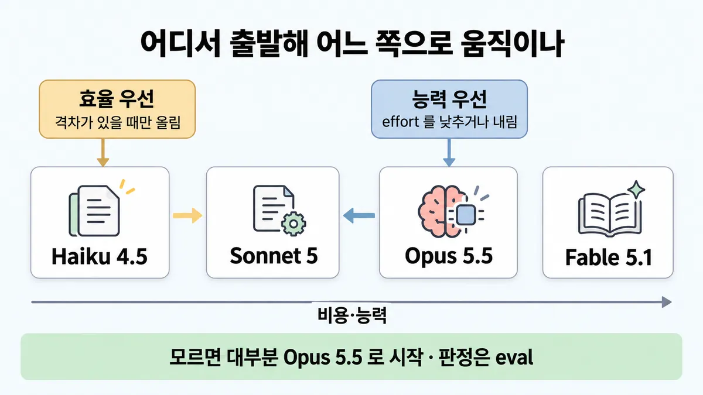
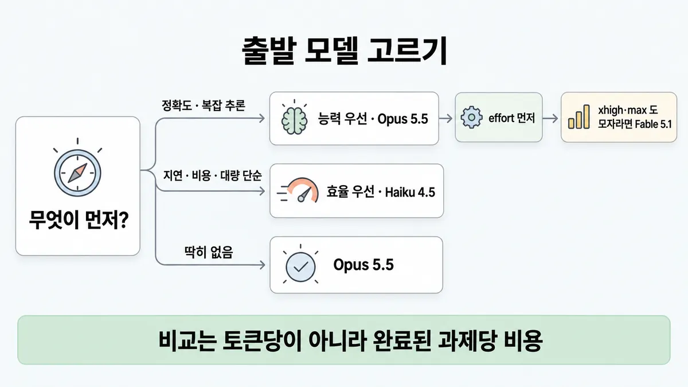

■ 출발 모델 고르기
왜 배우나 — 시험이 요구하는 것
시험 목표 2.1 모델 고르기 · D2 모델·프롬프트 13%Select appropriate Claude models based on trade-offs
이 개념으로 푸는 판단 (할 수 있어야 하는 것)
- 2.1① 정확도가 비용보다 중요한 복잡 추론 작업, 어느 모델로 시작하나? — 출발 모델 고르기 (효율 우선 = Haiku 4.5 에서 올림 / 능력 우선 = Opus 5.5 에서 낮춤)
- 2.1③ 보기에 모델 이름·단가가 섞여 나온다 — 숫자로 고르나, 역할로 고르나? — 가격·모델명이 든 보기 읽기 (역할로 판단 · 문항에 모델명이 있으면 그 모델 기준)
한눈에
모델 고르기 = 어디서 출발해 어느 쪽으로 움직이나. 출발법 두 가지 — 효율 우선(Haiku 4.5 로 시작 → 특정 능력 격차가 있을 때만 올림) · 능력 우선(Opus 5.5 로 시작 → effort 를 낮추거나 모델을 내림). 모르면 대부분 Opus 5.5 로 시작 ✓ 확인 (2026-09-28 조회)
어느 쪽이든 판정은 eval. 좋은 평가 세트가 가장 중요한 단계 ✓ 확인
비유 인스턴스 사이징. 배치 워커는 작은 타입으로 시작해 부하 테스트 보고 키우고, 핵심 DB 는 넉넉히 잡은 뒤 지표 보며 줄임


ELI5
이사할 때 트럭 크기를 고르는 거예요.
- 짐이 가볍고 자주 옮기면 작은 트럭부터 빌려 봐요.
- 깨지기 쉬운 귀한 짐이면 큰 트럭부터 빌리고, 남으면 줄여요.
- 잘 모르겠으면 중간보다 조금 큰 트럭이 무난해요.
- 트럭 비용은 "하루 요금"이 아니라 "몇 번 왕복했나"로 따져요.
개념 설명
원리
출발법이 둘인 이유
- 효율 우선 : 빠르고 싼 모델(Haiku 4.5)로 시작하면 반복이 빠르고 개발비가 싸고, 흔한 일은 그걸로 충분한 경우가 많음. 모자란 능력이 보일 때만 올림.
- 능력 우선 : 가장 강한 출발점(Opus 5.5)으로 먼저 "되는지"를 확인하고, 그다음 effort 를 낮추거나 모델을 내리며 효율을 찾음. 정확도가 비용보다 중요한 일이면 이쪽.
- 둘 다 판정은 eval. 좋은 평가 세트가 가장 중요한 단계.
왜 기본이 Opus 5.5 인가 (2026-09-28 조회)
- 공식 문장 = "대부분의 워크로드는 Opus 5.5 로 시작".
- Anthropic 내부 측정(코딩 벤치마크 일부)에서 Opus 5.5 기본(
medium)이 Fable 5.1 기본과 같은 점수를 해결당 약 5분의 1 비용에 냄 ($0.22 vs $1.19). - 그래서 최상위(Fable 5.1)는 "Opus 5.5 를
xhigh·max로 돌려도 모자랄 때"로 밀려남.
비용은 토큰당이 아니라 과제당
- 강한 모델은 턴·검색·되짚기가 적어서 토큰당 더 비싼 단가를 상쇄하기도 함.
- 반대로 긴 연구 루프에선 강한 모델이 더 많이 일해서 과제당 더 비쌈. 순위는 워크로드마다 뒤집힘 → 자기 트래픽으로 재야 함.
- 가장 어려운 10% 로 비교 : 쉬운 과제에선 다 비슷해 보이고 싼 게 이겨 보이지만, 청구서는 싼 모델이 실패한 과제(토큰 비용 + 재시도 + 실패가 뒤에 부르는 비용)가 정함.
- 새 토크나이저(Claude 4.7 이후)는 같은 글에 약 30% 더 많은 토큰 → 토큰당 비교는 새 모델을 구조적으로 비싸 보이게 함.
Haiku 4.5 가 맞는 곳
- 출력을 검사할 수 있는 대량 작업. 긴 에이전트 루프는 아님.
- 측정 예 : 대학원 수준 문항에서 Opus 5.5 의 약 5분의 1 비용에 정확도 63% (Opus 5.5 = 92%), 긴 코딩에선 훨씬 뒤처짐.
규칙과 판단


갈림길
① 출발 모델 [2.1①]
능력 우선
Opus 5.5 로 시작 → effort 를 낮추거나 모델을 내림 ✓ 확인
효율 우선
Haiku 4.5 로 시작 → 특정 능력 격차가 있을 때만 올림 ✓ 확인
Opus 5.5
모르면 대부분 Opus 5.5 로 시작 ✓ 확인
① 위로 갈 때 [2.1①] [2.1②]
effort 먼저
올리기 전 effort 부터 → ◆ effort 조정 vs 모델 교체
xhigh·max 도 모자람
Fable 5.1
Fable 5.1 은 Opus 5.5 를 xhigh·max 로 돌려도 모자랄 때 ✓ 확인
②③ 보기 읽기 [2.1③]
그 모델 기준
그 모델의 기능·제약으로 풀기 (예 Haiku 4.5 = effort 미지원 · extended thinking · 창 200K) ✓ 확인
과제당 비용
토큰당이 아니라 완료된 과제당 비용으로 비교 ✓ 확인
역할로
숫자 말고 역할로 가름 — 빠르고 싼 모델 ↔ 능력 높은 모델 업계 일반 시험 요령
나머지 규칙
-
바꿀지 판단 : 사용 사례 전용 벤치마크 → 실제 프롬프트·데이터로 테스트 → 정확도 · 품질 · 엣지 케이스 비교 → 성능·비용 저울질 ✓ 확인. 비교는 쉬운 과제가 아니라 가장 어려운 10% 로 (실패한 과제도 토큰 비용이 듦) ✓ 확인 [2.1①]
형식이 계속 깨질 때 프롬프트 탓인지 모델 탓인지 = ◆ prompt failure vs model mismatch
규칙 원문 ①②③ (갈림길로 그린 규칙)
-
출발법 두 가지 (2026-09-28 조회) ✓ 확인 [2.1①]
출발 시작 모델 맞는 일 그다음 효율 우선 Haiku 4.5 초기 시제품 · 지연(latency) 요구가 엄격 · 비용 민감 · 대량의 단순 작업 철저히 테스트 → 평가 → 특정 능력 격차가 있을 때만 올림 능력 우선 Opus 5.5 복잡한 추론 · 과학·수학 · 미묘한 이해 · 정확도가 비용보다 중요 · 고급 코딩·자율성 높은 에이전트 이 모델에 맞게 프롬프트 최적화 → 평가 → effort 를 낮추거나 모델을 내림 → xhigh·max에서도 모자라면 Fable 5.1기본 : 모르면 대부분 Opus 5.5 로 시작 ✓ 확인 · 올리기 전 effort 부터 = ◆ effort 조정 vs 모델 교체
-
역할표 — 공식 한 줄 설명 그대로 (2026-09-28 조회) ✓ 확인 [2.1③]
모델 역할 지연 입력/출력 (백만 토큰당) 기본 effort thinking 창 Fable 5.1 까다로운 추론 · 장기 에이전트 작업 느림 $10 / $50 highadaptive 항상 켜짐 1M Opus 5.5 장시간 에이전트 코딩 · 지식 작업 중간 $4 / $20 mediumadaptive 항상 켜짐 1M Sonnet 5 속도와 지능의 최적 조합 빠름 $2 / $10 highadaptive 1M Haiku 4.5 가장 빠름, 프런티어에 가까운 지능 가장 빠름 $1 / $5 미지원 extended 200K 비용·능력 낮은 순 = Haiku 4.5 → Sonnet 5 → Opus 5.5 → Fable 5.1 ✓ 확인. 단가 비율 1:2:4:10 (계산)
시험 뒤 변경 Opus 5 2026-07-24 · Fable 5.1 2026-09-01 · Opus 5.5 2026-09-22 출시 · Sonnet 5 $2/$10 정가 확정 2026-08-10. 가이드(2026-07는 이 이름들을 모를 수 있음 → 시험은 역할로 물을 가능성 (추론))
캐시·배치·토크나이저까지 넣은 건당 비용 = ■ per-request cost · 속도 lever(손잡이) = ■ 지연 줄이기 lever
-
보기에 모델명·단가가 섞여 나옴 → 숫자 말고 역할로 가름 — 빠르고 싼 모델 ↔ 능력 높은 모델 업계 일반 시험 요령. 문항이 모델을 적으면 그 모델의 기능·제약으로 풀기 — 예 Haiku 4.5 = effort 미지원 · extended thinking · 창 200K ✓ 확인. thinking(사고) 제어 차이 = ■ 모델별 thinking 제어 [2.1③]
단가를 계산해야 하면 토큰당이 아니라 완료된 과제당 비용으로 비교. 강한 모델은 턴·검색·되짚기가 적어 토큰당 더 비싼 단가를 상쇄하기도 함 ✓ 확인
예 : Fable 5.1
low= 88.6% · 해결당 $0.54 vs Sonnet 5 기본 = 77.4% · $0.84 — 토큰당 5배 비싼데 해결당 35% 쌈 (Anthropic 내부 측정, 방향성) ✓ 확인. 순위는 워크로드마다 뒤집힘 ✓ 확인
더 깊이 : 판단 규칙 · 상황 변수 (설명)
판단 규칙
| 조건 | 답 | 등급 | 근거 |
|---|---|---|---|
| 복잡 추론(reasoning) · 과학·수학 · 미묘한 이해 · 정확도가 비용보다 중요 · 고급 코딩·자율성 높은 에이전트 | 능력 우선 : Opus 5.5 로 시작 → effort 낮추기·모델 내리기 | ✓ 확인 | choosing-a-model en-2026-09-28 34~48줄 "For complex tasks where intelligence and advanced capabilities are paramount, you may want to start capability-first" |
| 초기 시제품 · 지연(latency) 요구 엄격 · 비용 민감 · 대량의 단순 작업 | 효율 우선 : Haiku 4.5 로 시작 → 특정 능력 격차가 있을 때만 올림 | ✓ 확인 | 같은 글 18~30줄 "Upgrade only if necessary for specific capability gaps." |
| 뚜렷한 기준이 없음 | Opus 5.5 로 시작 | ✓ 확인 | 같은 글 58줄 "Most workloads start with Claude Opus 5.5." · models overview en-2026-09-28-full 25줄 |
Opus 5.5 를 xhigh·max 로 돌려도 까다로운 추론·장기 에이전트 작업에서 모자람 |
Fable 5.1 | ✓ 확인 | choosing-a-model 40줄 |
| 출력을 검사할 수 있는 대량 작업 | Haiku 4.5 가 맞음 · 긴 에이전트 루프엔 안 맞음 | ✓ 확인 | optimizing-cost-intelligence en 250줄 "It fits high-volume work with checkable outputs, not long agentic loops." |
| 모델 둘을 비교 | 완료된 과제당 비용 · 가장 어려운 10% 로 | ✓ 확인 | optimizing 242·254줄 |
| 모델을 바꿀지 | 사용 사례 벤치마크 → 실제 프롬프트·데이터 → 정확도·품질·엣지 케이스 → 성능·비용 저울질 | ✓ 확인 | choosing-a-model 69~79줄 |
| 문항이 특정 모델을 적음 | 그 모델의 기능·제약으로 풀기 | 업계 일반 (시험 요령) — 기능 값 자체는 확인 | models overview full 29~37줄 |
상황 변수
| 변수 | 값 | 답 쪽 | 등급 | 근거 |
|---|---|---|---|---|
| 정확도 vs 비용 | 정확도가 비용보다 중요 | 능력 우선 (Opus 5.5) | ✓ 확인 | 판단 규칙 1 |
| 지연 요구 | 실시간 · 엄격 | Haiku 4.5 (가장 빠름) | ✓ 확인 | choosing-a-model 28·65줄 · overview full 31줄 |
| 지연 요구 | 엄격한데 품질 여유 없음 · 돈은 있음 | fast mode (Opus 5.5·5·4.8, 출력 속도 최대 2.5배, 웃돈) → ■ 지연 줄이기 lever | ✓ 확인 | choosing-a-model 6줄 |
| 한 요청 입력 크기 | 20만 토큰 넘음 | Haiku 4.5 는 빠짐 (창 200K, 나머지 1M) | ✓ 확인 | overview full 36줄 |
| 작업 길이 | 수 시간짜리 에이전트 세션 · 다단계 심층 리서치 | Fable 5.1 고려 | ✓ 확인 | choosing-a-model 62줄 |
| 작업 길이 | 수 시간 자율 코딩 · 대규모 리팩터링 · 컴퓨터 사용 | Opus 5.5 | ✓ 확인 | choosing-a-model 63줄 |
| 작업 성격 | 일상 코딩 · 데이터 분석 · 콘텐츠 · 에이전트 도구 사용 | Sonnet 5 | ✓ 확인 | choosing-a-model 64줄 |
| 출력 검증 | 테스트·검증기 있음 | 싼 모델·낮은 effort 쪽이 설 자리가 있음 (실패만 재실행 = ◆ effort 조정 vs 모델 교체) | ✓ 확인 | optimizing 27·250줄 |
| 개발 단계 | 초기 시제품 | 효율 우선 | ✓ 확인 | choosing-a-model 27줄 |
| 입력이 쪽수·글자로만 주어짐 | 새 토크나이저 모델 | 같은 글이 약 30% 더 많은 토큰 | ✓ 확인 | pricing en-2026-09-28 15줄 |
연습 문제
계약서들 사이의 조항 충돌을 찾는 앱을 새로 만든다. 여러 조항을 엮어 따지는 복잡한 추론(reasoning)복잡 추론이고, 놓친 충돌 한 건이 비용보다 훨씬 비싸다정확도 먼저. 팀 일부는 "평가를 통과하는 가장 싼 Haiku 4.5 부터 시작해 실패할 때만 올리자"고 한다. 어느 모델에서 출발할까?
시험 대비
함정
- "평가를 통과하는 가장 싼 모델(Haiku)부터만 시작" → 출발법은 둘. 정확도 우선 · 복잡 추론이면 Opus 5.5 부터 ✓ 확인
- "안전하게 무조건 최상위(Fable 5.1)" → Fable 5.1 은 Opus 5.5 를
xhigh·max로 돌려도 모자랄 때 ✓ 확인 - "과제와 상관없이 제일 작은 모델로" → 품질 위험 (샘플 2 B) ✓ 확인
- 토큰 단가로 암산해 "싼 모델이 싸다" → 완료된 과제당 비용으로 비교 ✓ 확인
- "Sonnet $3/$15" → Sonnet 4.6·4.5 가격. Sonnet 5 는 $2/$10 (2026-09-28 조회) ✓ 확인 · Opus 4.8 · Fable 5 는 옛 모델(legacy) ✓ 확인
- Haiku 4.5 문항에 "effort 를 낮춘다" 보기 → Haiku 4.5 는 effort 미지원 ✓ 확인
- Haiku 4.5 에 1M 토큰 넣기 → 창 200K ✓ 확인
신호
"Most workloads start with Claude Opus 5.5."
"For complex tasks where intelligence and advanced capabilities are paramount, you may want to start capability-first"
"Upgrade only if necessary for specific capability gaps."
"If your evals at xhigh or max effort still fall short on demanding reasoning or long-horizon agentic work, move to Claude Fable 5.1"
"having a good evaluation set is the most important step in the process."
"so compare models on cost per completed task"
"The fastest model with near-frontier intelligence" (Haiku 4.5)
"downsizing blindly (B) risks quality" (가이드 샘플 2)
더 깊이 : 뒤집히는 때 · 오답 재료 (설명)
뒤집히는 때
1. 토큰당 싼 모델이 해결당 비쌀 때
- 조건 : 싼 모델이 과제당 토큰을 더 쓰고 더 자주 실패함.
- 식 : 해결당 비용 = (토큰당 가격 × 시도당 토큰) ÷ 성공률 (실패하면 같은 값으로 다시 시도한다고 봄).
- 예 : Sonnet 5 단가를 1, Opus 5.5 를 2 로 둠(입력·출력 모두 2배, 2026-09-28 조회). Sonnet 5 가 시도당 토큰 1.5배 · 성공률 60%, Opus 5.5 가 1배 · 90% 라면 → Sonnet 5 = 1 × 1.5 ÷ 0.6 = 2.5, Opus 5.5 = 2 × 1 ÷ 0.9 ≈ 2.2. 토큰당 절반 단가인 Sonnet 5 가 해결당 약 13% 더 비쌈.
- 손익 : Sonnet 5 의 (시도당 토큰 ÷ 성공률) 이 Opus 5.5 의 2배를 넘으면 뒤집힘.
- 전제 : 입력·출력 비율 같음 · 캐시 무시 · 실패가 뒤에 부르는 비용은 뺌. 숫자는 가정.
- 공식 측정 예(확인) : Fable 5.1
low가 Sonnet 5 기본보다 토큰당 5배 비싼데 해결당 35% 쌌음 (optimizing 248줄). 단 긴 연구 루프에선 반대로 Fable 5.1 이 과제당 약 4배 (같은 줄). - 등급 : 계산 (측정 예는 확인)
2. 캐시 읽기가 대부분인 루프에선 단가 비율이 줄어듦
- 조건 : 에이전트 루프처럼 입력 대부분이 캐시 읽기.
- 사실 : 캐시 읽기 단가가 Opus 5.5 = $4 × 0.05 = $0.20, Sonnet 5 = $2 × 0.1 = $0.20 로 같음 (2026-09-28 조회).
- 계산 : 한 턴 = 캐시 읽기 12만 + 새 입력 3천 + 출력 1천 5백. Sonnet 5 = 0.12 × $0.20 + 0.003 × $2 + 0.0015 × $10 = $0.024 + $0.006 + $0.015 = $0.045. Opus 5.5 = $0.024 + $0.012 + $0.030 = $0.066. 표 단가는 2배인데 이 턴은 약 1.47배.
- 전제 : 새 입력의 캐시 쓰기 할증(1.25배)은 뺌 · 두 모델 턴 수 같다고 봄. 턴 수가 줄면 더 좁혀짐.
- 등급 : 계산 (단가·배수는 확인)
- 근거 : pricing en-2026-09-28 9·85·87줄
- 시험 뒤 변경 Opus 5.5 읽기 0.05배는 2026-09-22 출시 값. 시험은 0.1배로 물을 가능성.
3. 효율 우선인데 긴 에이전트 루프
- 조건 : 비용 민감이라 Haiku 4.5 로 시작하려는데 일이 긴 에이전트 루프.
- 판단 : 공식은 Haiku 4.5 를 "출력을 검사할 수 있는 대량 작업"용으로 두고 긴 에이전트 루프엔 안 맞는다고 씀. 이 경우 "효율 우선"이라는 말만 보고 Haiku 를 고르면 틀림.
- 등급 : ✓ 확인
- 근거 : optimizing 250줄
4. 가이드 시점의 이름
- 조건 : 가이드는 2026-07 판인데 Opus 5.5(2026-09-22)·Fable 5.1(2026-09-01)은 그 뒤 출시.
- 판단 : 시험 보기가 옛 이름(예 Opus 4.8·Fable 5)을 쓸 수 있음 → 이름이 아니라 역할(가장 빠르고 싼 · 균형 · 강한 · 최상위)과 출발법으로 풀기.
- 등급 : 미해결 (가이드 시점 choosing-a-model 판을 못 봄)
- 근거 : 릴리스 노트 en 15·46줄
오답 재료
| 오답 | 왜 끌리나 | 왜 틀리나 | 등급 | 근거 |
|---|---|---|---|---|
| "평가를 통과하는 가장 싼 모델(Haiku)부터 시작해 실패할 때만 올린다" (어떤 일이든) | 공식 효율 우선 길과 문장이 같음 | 출발법은 둘. 정확도가 비용보다 중요한 복잡 추론이면 Opus 5.5 부터 | ✓ 확인 | choosing-a-model 34~48줄 |
| "안전하게 최상위 Fable 5.1 로" | 가장 정확할 것 같음 | Opus 5.5 를 xhigh·max 로 돌려도 모자랄 때만. 코딩 측정에선 Opus 5.5 기본이 같은 점수를 약 5분의 1 비용에 |
✓ 확인 | choosing-a-model 40줄 · optimizing 248줄 |
| "과제와 상관없이 제일 작은 모델로" | 비용이 바로 줄어 보임 | 품질 위험 (공식 샘플 2 B) | ✓ 확인 | 가이드 샘플 2 해설 "downsizing blindly (B) risks quality" |
| "Sonnet $3/$15 라 비용 40%" 처럼 단가로 암산 | 숫자라 정확해 보임 | $3/$15 는 Sonnet 4.6·4.5 가격(Sonnet 5 = $2/$10). 그리고 비교는 과제당 | ✓ 확인 | pricing en-2026-09-28 9줄 · optimizing 242줄 |
| "Opus 4.8 이 최상위 Opus · Fable 5 가 최고 등급" | 영상이 그렇게 말함(목록 인용) | 둘 다 옛 모델(legacy). 현행 = Opus 5.5 · Fable 5.1 | ✓ 확인 | overview full 64줄 |
| "등급 단가 비율 1:3:5:10" | 영상 비율(목록 인용) | 현행 입력 단가 $1·$2·$4·$10 = 1:2:4:10 | 계산 | overview full 32줄 |
| "Haiku 4.5 에 1M 토큰 문서를 통째로" | 현행 모델 대부분이 1M | Haiku 4.5 창 = 200K | ✓ 확인 | overview full 36줄 |
| "모델을 바꾸는 보기는 늘 오답" | CCA-F 에선 모델 교체가 오답 보기였음 | CCAR-P 는 모델 선택 자체가 목표 2.1. eval 로 확인하면 맞는 답일 수 있음 | 업계 일반 | 가이드 목표 2.1 · CCA-F 가이드 문제 35·52 |
참고
CCA-F
봄 — CCA-F 는 모델 교체를 주로 **오답 보기**로 냈음(Skill 에 model: haiku · 복잡한 케이스를 Haiku→Sonnet 으로 라우팅 — CCA-F 가이드 문제 35·52). 여기선 출발 모델 · 역할 · 문항에 적힌 모델명을 **설계 판단**으로 물음
출처
- 가이드 목표 2.1 공식 시험 가이드 v1.0
- 샘플 2 공식 시험 가이드 v1.0
- choosing-a-model (en-2026-09-28 18~48·58~65·69~79줄, ko 같은 줄)
- models overview (en-2026-09-28-full 25·29~37·64줄)
- optimizing-cost-intelligence (en·ko 238·242·248·252·254줄)
- pricing (en-2026-09-28 9줄)
- 릴리스 노트 (en 15·46·96·120줄)
- CCA-F 가이드 (개인 학습 자료 · 비공식 가이드)
상태
- ✓ 확인 (①②④ · ③ 모델 기능)
- 업계 일반 1줄(③ "역할로 가름" 시험 요령)
- 계산 1곳(단가 비율)
- 시험 뒤 변경 1곳(② 라인업·단가)
미해결
- 목록 2.1③ 의 "시험 가이드 v1.0 에는 모델 이름·가격이 한 줄도 없다" — 받아 둔 가이드 원문은 6~7쪽(
ccarp/raw/official/sample-questions-p6-7.txt)뿐이라 전체는 확인 못 함. 그 두 쪽(목표 7 · 준비 · 샘플 3문항)엔 모델 이름·가격 없음(확인). 준비 항목에 "model selection" 연습은 있음(19줄). - 가이드(2026-07) 시점의 공식 출발 권고가 무엇이었는지 모름 → 시험 키가 "Opus 5.5" 가 아닌 옛 이름일 수 있음 (뒤집히는 때 4).
- Haiku 4.5 은퇴 하한 = 2026-10-15 (overview full 40줄). 효율 우선의 공식 예시 모델이 곧 바뀔 수 있음.
- "문항에 모델명이 있으면 그 모델 기준" 은 공식 문장이 아니라 시험 요령(업계 일반).
- 과제당 비용 수치는 Anthropic 내부 벤치마크 · 방향성이지 보장 아님 (optimizing 33줄 "directional, not guarantees").
- 목록 영어 신호 3개("Most workloads start…" · "For complex tasks…" · "Upgrade only if necessary…")는 원문에서 모두 찾음 — 못 찾은 인용 없음.